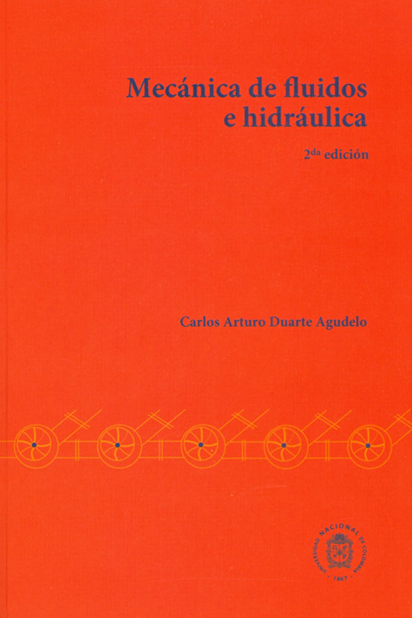

Mecánica de Fluidos
El aprendizaje autónomo de esta materia se ha dado mediante la revisión de dos libros guía:
- Mecánica de Fluidos e Hidráulica 2da edición Ref:[1]
- Mecánica de Fluidos Fundamentos y Aplicaciones 2da edición Ref:[2]
Los conceptos que se iran agregando a esta página tiene como fuente, inicialmente los dos libros ya mencionados, puede que durante el transcurso del semestre se agregue información proveniente de algun otro sitio Web, debidamente Referenciado, o de las sesiones que se lleven a cabo en el curso oficial, como lo pueden ser apuntes de clase, ilustraciones, etc.

Mecánica de FLuidos e Hidráulica
Carlos Arturo Duarte Agudelo
2da Edición
VER LIBRO (tienda)
Mecánica de Fluidos Fundamentos y Aplicaciones
Yunus A. Çengel
Jhon M. Cimbala
2da Edición
VER LIBRO (tienda)